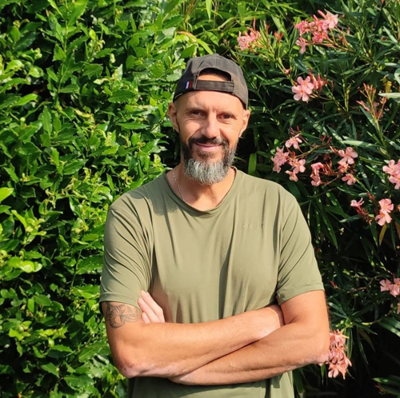

Sérieux et soin
Je réalise chaque intervention avec attention et je veille à laisser les lieux propres.


Ced A Tout Faire · Depuis 2013
Je m'appelle Cédric Puygrenier et j'exerce mon activité de multiservices à domicile à Rochefort et dans les alentours depuis plus de 10 ans.
Je suis quelqu'un qui aime son travail, mais aussi le contact avec les personnes pour lesquelles j'interviens. Pour moi, un service réussi ne se résume pas à une tâche effectuée : il faut écouter, comprendre le besoin et laisser un travail propre et soigné.
Je reste attaché à une relation simple, directe et de proximité. Ma priorité est votre satisfaction, du premier échange jusqu'à la fin de l'intervention.
Une façon de faire simple, centrée sur l’écoute, le soin et le travail bien réalisé.
Je réalise chaque intervention avec attention et je veille à laisser les lieux propres.
Je prends le temps de comprendre votre demande et de vous proposer une réponse adaptée.
Le point de repère principal de mon travail.
Pour votre toiture, votre véranda ou votre jardin, selon vos besoins.